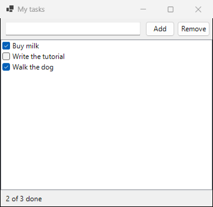

Tutorial 24: A project: a to-do list that remembers
A complete small application — add, tick and remove tasks, see how many are done, and find them again the next time the program starts. Windows Forms, JSON and files together.
What you will learn#
- planning a small application: data, window, behaviour, saving,
- a
CheckedListBox, - saving to JSON and loading it again,
- a trap: lists of pairs and named arguments,
- keeping a window and its data in step.
The design#
| Part | Decision |
|---|---|
| Data | the tasks live in the list control itself; each has a text and a done flag |
| Window | a text box and Add / Remove buttons on top, the list in the middle, a status line at the bottom |
| Behaviour | Add ignores blank text; clicking an item ticks it; the status says "n of m done" |
| Saving | after every change the tasks are written to a JSON file; at start-up the file is read |
The program#
# Tutorial 24: a project - a to-do list that remembers its tasks (Windows Forms + JSON + files)
load "dotnet.ring"
dnUseDesktop()
using {
"System"
"System.IO"
"System.Text.Json"
"System.Drawing"
"System.Windows.Forms"
}
oForm = ""
oNew = ""
oTasks = ""
oStatus = ""
cFile = ""
lLoading = False
func main
# the tasks are saved here (a test uses a temporary file)
cFile = new Path().Combine(new Path().GetTempPath(),"tutorial24-tasks.json")
if uiSelfTest()
cFile = new Path().Combine(new Path().GetTempPath(),"tutorial24-test.json")
if new File().Exists(cFile)
new File().Delete(cFile)
ok
ok
oForm = uiForm("My tasks",360,320)
# The window: a text box and a button on top, the list in the middle, a status line at the bottom.
# (The control that fills is added FIRST: see tutorial 13.)
oTasks = new CheckedListBox() {
Dock = "Fill"
CheckOnClick = True
setMouseUpEvent("tasksChanged()") # after a click the state of the item is up to date
}
oForm.Controls.Add(oTasks)
oTop = uiPanel(oForm,0,0,360,36)
oTop.Dock = "Top"
oNew = uiTextBox(oTop,8,6,230,24)
uiButton(oTop,"Add",246,5,50,26,"addTask()")
uiButton(oTop,"Remove",300,5,56,26,"removeTask()")
oStatus = uiLabel(oForm,"",0,0,360,22)
oStatus.Dock = "Bottom"
loadTasks()
refreshStatus()
oForm.setFormClosingEvent("saveTasks()")
uiTest(oForm,"selfTest()")
uiRun(oForm)
uiEnd()
func addTask
cText = trim(oNew.Text)
if cText = ""
return
ok
oTasks.Items.Add_2(cText,False)
oNew.Text = ""
saveTasks()
refreshStatus()
func removeTask
nIndex = oTasks.SelectedIndex
if nIndex >= 0
oTasks.Items.RemoveAt(nIndex)
saveTasks()
refreshStatus()
ok
func tasksChanged
saveTasks()
refreshStatus()
func refreshStatus
nDone = oTasks.CheckedItems.Count
oStatus.Text = " " + nDone + " of " + oTasks.Items.Count + " done"
# ---------------------------------------------------------------- saving and loading (JSON: [[1 or 0, "text"], ...])
# Note: the number comes FIRST. A list like [["Buy milk",1]] (a list of [text, value] pairs) passed alone to a method is read as
# NAMED ARGUMENTS ( :name = value ), so JsonSerializer.Serialize would look for a parameter called "Buy milk".
func saveTasks
if lLoading
return
ok
aList = []
for nIndex = 0 to oTasks.Items.Count - 1
aList + [oTasks.GetItemChecked(nIndex),oTasks.Items.Item(nIndex)] # [done, text]: see the note about pairs
next
cJson = new JsonSerializer().Serialize(aList)
new File().WriteAllText(cFile,cJson)
func loadTasks
if not new File().Exists(cFile)
return
ok
lLoading = True
oDocument = new JsonDocument().Parse(new File().ReadAllText(cFile))
oRoot = oDocument.RootElement
for nIndex = 0 to oRoot.GetArrayLength() - 1
oTask = oRoot.Item(nIndex)
oTasks.Items.Add_2(oTask.Item(1).GetString(),oTask.Item(0).GetInt32() = 1)
next
oDocument.Dispose()
lLoading = False
func selfTest
oNew.Text = "Buy milk"
addTask()
oNew.Text = "Write the tutorial"
addTask()
oNew.Text = " "
addTask() # blank: ignored
dnAssert("two tasks",oTasks.Items.Count,2)
oTasks.SetItemChecked(0,True)
saveTasks()
refreshStatus()
dnAssert("status",oStatus.Text," 1 of 2 done")
# the file holds the tasks
dnAssert("saved as JSON",new File().ReadAllText(cFile),'[[1,"Buy milk"],[0,"Write the tutorial"]]')
# a second load shows the same tasks
oTasks.Items.Clear()
loadTasks()
dnAssert("loaded again",oTasks.Items.Count,2)
dnAssert("the checked state",oTasks.GetItemChecked(0),True)
oTasks.SelectedIndex = 1
removeTask()
dnAssert("removed",oTasks.Items.Count,1)
new File().Delete(cFile)
SELFTEST OK (6 checks)How it works#
The window#
Remember tutorial 13: the control that fills the window is added first, then the top panel and the status label (the helpers uiPanel, uiLabel and Dock do the rest). CheckOnClick = True makes one click tick or untick an item.
Add and remove#
addTask trims the text, ignores a blank one, adds Items.Add_2(text, False) (the second parameter is the initial checked state), clears the text box, saves and refreshes the status. removeTask removes the selected item (SelectedIndex is -1 when nothing is selected).
Reacting to a tick#
setMouseUpEvent("tasksChanged()") runs after the click, when the item's state is already up to date; the function saves and refreshes the status line. (The ItemCheck event runs before the state changes, which makes a status line show the old number.)
Saving as JSON#
The file holds a list of lists, one [done, text] per task: [[1,"Buy milk"],[0,"Write the tutorial"]]. JsonSerializer.Serialize(aList) writes it, and loading uses JsonDocument: GetArrayLength(), Item(i), GetInt32(), GetString().
The trap. The number comes first in each pair for a reason. A Ring list such as [["Buy milk",1],["Walk",0]] is a list of [text, value] pairs, and a list of pairs that is passed alone to a method is read as named arguments: :Buy milk = 1. Serialize would look for a parameter called "Buy milk" and fail. Put a number (or anything that is not a text) first, or wrap the data in one more list, and the list is passed as a value.
Starting and stopping#
loadTasks runs before the window is shown. setFormClosingEvent("saveTasks()") saves once more when the window closes. While loading, a flag lLoading stops saveTasks from rewriting the file in the middle of the loading.
Testing#
selfTest adds tasks, ticks one, saves, clears the list, loads again and checks the contents, the JSON text and the status. It uses a separate file name when started with --selftest, so that it never touches your real list.
What you learned#
- design first: data, window, behaviour, saving,
CheckedListBox, events after a click,- JSON for saving, with the pair list trap in mind,
- a flag to avoid saving while loading,
- tests that use their own file.
Exercises#
- Show the done tasks in gray (use
DrawItem, or simply move done tasks to the bottom). - Add Clear done that removes all ticked tasks.
- Save to the user's documents folder (
Environment.GetFolderPath("MyDocuments")). - Add a due date to each task and sort by it.
The full-size version is the TodoList application.